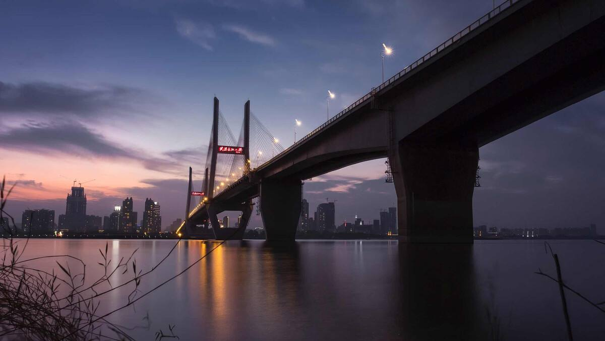
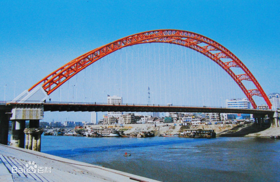

-

The Second Wuhan Yangtze River Bridge is a bridge across
the Yangtze River in Wuhan, Hubei province, China. It is located
northeast (downstream) of the historic central area of the city's Hankou
District and is the northern crossing for the Inner Ring Road.
It is a cable-stayed bridge built of pre-stressed concrete, has a
central span of 400 metres (1,300 ft). It is 4.678 kilometres (2.907 mi) in
length (including the 1,876-metre (6,155 ft) main span) and is 26 metres
(85 ft) wide. Its main bridgeheads are 90 metres (300 ft) high each,
pulling 392 thick slanting cables together in the shape of double fans, so
that the central span of the bridge is well-balanced on the piers and the
bridge's stability and vibration resistance are ensured.
-
.jpg) The Wuhan Yangtze Great Bridge, commonly known as Wuhan First Yangtze
Bridge, is a double-deck road and rail bridge across the Yangtze River
in Wuhan, in Central China. At its completion in 1957, the bridge was
the easternmost crossing of the Yangtze, and was often referred to as
the "First Bridge of the Yangtze".The bridge extends 1.6 kilometers (1 mile) from
Turtle Hill in Hanyang, on the northern bank of the Yangtze,
to Snake Hill in Wuchang, on the southern bank of the Yangtze. Plans
for the bridge's construction were first made in 1910. A total of four
exploratory surveys were made between 1913 and 1948 to identify
a suitable site, but economic limitations and the combination of
World War II and the Chinese Civil War prevented the bridge's building until
the 1950s. Actual construction began in September 1955 and was completed in
October 1957
The Wuhan Yangtze Great Bridge, commonly known as Wuhan First Yangtze
Bridge, is a double-deck road and rail bridge across the Yangtze River
in Wuhan, in Central China. At its completion in 1957, the bridge was
the easternmost crossing of the Yangtze, and was often referred to as
the "First Bridge of the Yangtze".The bridge extends 1.6 kilometers (1 mile) from
Turtle Hill in Hanyang, on the northern bank of the Yangtze,
to Snake Hill in Wuchang, on the southern bank of the Yangtze. Plans
for the bridge's construction were first made in 1910. A total of four
exploratory surveys were made between 1913 and 1948 to identify
a suitable site, but economic limitations and the combination of
World War II and the Chinese Civil War prevented the bridge's building until
the 1950s. Actual construction began in September 1955 and was completed in
October 1957
-

The Qingchuan Bridge is an arch bridge located in Wuhan,
People's Republic of China. It is the fourth bridge on the Han
River, the third motorway bridge (provisional name
being "Third Jianghan Bridge") and also the "Rainbow Bridge" due
to its shape and red color. The bridge has a span of 280 m (919 ft),
with a full length of 989.75 m (3,247.2 ft). The construction of this
bridge begins on Dec 20, 1997, and completed in 2000, which
started revenue service to the public. It has four lanes, connects
Yanhe Ave in Hankou with Hannan Rd in Hanyang.[1] It used to be a tolled bridge,
but after the implementation of electronic toll collection in Wuhan,
the toll plaza was razed.